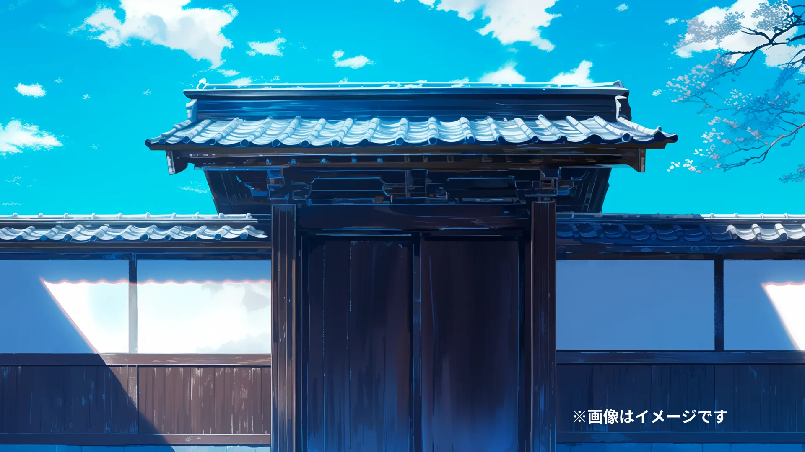
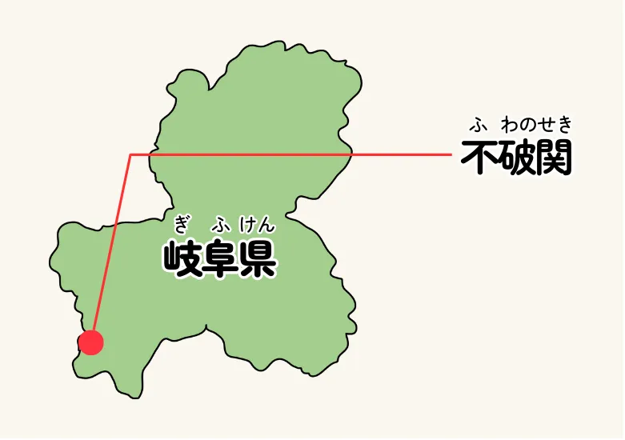
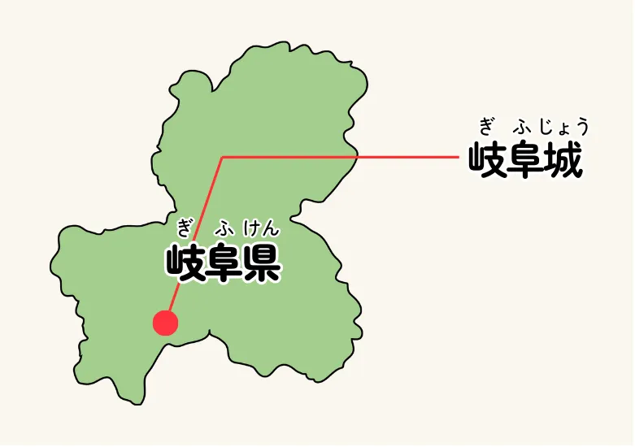

岐阜の名所紹介 不破関


天下への道 岐阜
シュン
不破関
岐阜県の西側にある関所は不破関というんだぜ。ここは関ヶ原の頃にはもう関所として使われていなかったんだけど、飛鳥時代や奈良時代の頃は鈴鹿関、愛発関と並んで大切な関所だっていわれてたんだ。
近江国と美濃国を分けていたこの関所は、岐阜県から東の地域から物や人が京都や畿内に入ったり出ていったりするのを監視していたんだ。
たとえば天智天皇の弟、大海人皇子と、そのお兄さんの天智天皇の息子の大友皇子が戦った壬申の乱では、大海人皇子がこの不破関を抑えて、大友皇子側が自由に通行できないようにすることで、連携を取れなくしたことが勝利の理由の一つだって言われているんだぜ。
岐阜の名所紹介 岐阜城

天下への道 岐阜
シュン
岐阜城
岐阜市の真ん中にそびえたっているのが、この岐阜城だ！ 金華山と呼ばれる小さい山を覆うように建てられたこの城は、元々稲葉山城と呼ばれていたんだぜ！
鎌倉時代からずっとある岐阜城だけど、やっぱり有名になったのは美濃の蝮、斎藤道三が、油売りの身分から守護を追放して大名に成り上がる国盗りの話からじゃないか？
その後、あの天才軍師竹中半兵衛がわずか16人で乗っ取ったりもして、そして最後は、あの織田信長が手に入れて本拠にしたんだ！
岐阜というのは「岐山より天下を臨む」という中国の昔話から信長が名付けたんだって。
関ヶ原の直前に信長の孫、秀信が東軍の大軍相手に頑張った、岐阜城の戦いも知られているぞ。